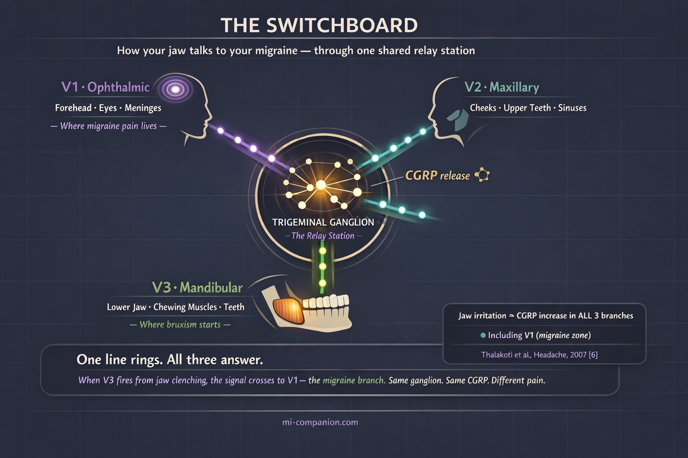

By Rustam Iuldashov
30 years lived experience with chronic migraine | Sources: 25 peer-reviewed references including Pain (narrative review, 2024), SAGE Open Medicine (meta-analysis, n=31 studies), BMC Oral Health (n=587), Headache, Cephalalgia | Last updated: March 12, 2026
Medical Review: This content is based on peer-reviewed research from Pain, SAGE Open Medicine, BMC Oral Health, Headache, British Dental Journal, Physiological Reviews, Medicina, Cephalalgia, Cranio, Journal of Oral Rehabilitation, Journal of Clinical Medicine, Toxins, Manual Therapy, and Current Pain and Headache Reports.
Important Notice: This article is for informational purposes only and does not replace professional medical advice. The author is not a licensed physician, dentist, or healthcare professional. Occlusal splints and dental devices should only be prescribed and monitored by a qualified dental professional.
Key Takeaways
- TMD and migraine co-occur in roughly 60% of cases, connected by the trigeminal nerve and CGRP pathways[1]
- Bruxism — often undetected — can feed the neural sensitization cycle that sustains chronic migraine
- Sleep bruxism and awake bruxism are distinct behaviors with different mechanisms and triggers[15]
- The NTI-tss device is FDA-cleared for migraine prevention — in the pivotal trial, 82% of users saw a 77% reduction in events[19]
- Treating TMD reduced headache disability by up to 39% and analgesic use by up to 46% at three months[17]
- Your teeth should not touch except when eating — jaw awareness alone is a powerful first step
You wake up with a headache and run through the usual suspects. Bad sleep. Weather. Stress. You reach for your triptan. But here’s what you probably didn’t check: your jaw.
While you slept, your teeth were locked together with up to 250 pounds of force per square inch. Your masseter muscles — the strongest in the human body relative to their size — had been contracting for hours. And every contraction sent a signal straight to the nerve that also drives your migraine.
This is the overlooked story of bruxism, TMJ disorders, and a pain pathway that roughly 60% of migraine patients share — most without knowing it.[1]
The Joint That Runs Everything
The temporomandibular joint sits just in front of each ear, connecting jawbone to skull. It is one of the body’s most complex joints: a hinge that also slides, letting you chew, talk, yawn — and, unfortunately, clench. When this joint or the muscles surrounding it become painful and dysfunctional, the condition is called a temporomandibular disorder, or TMD.[2]
TMD is staggeringly common. Around 31% of adults show clinical signs.[3] As many as 40% to 70% of the general population experience at least some symptoms — jaw pain, clicking, limited mouth opening — at some point in their lives.[4] Women are affected twice as often as men. Peak onset: ages 20 to 50.[4]
Those numbers should look familiar. Migraine follows a nearly identical demographic curve. That overlap is not a coincidence.
The Nerve That Connects Your Jaw to Your Migraine
Your trigeminal nerve is the largest cranial nerve, and it does more work than most people realize. Its three branches divide the face into territories. V1, the ophthalmic branch, covers the forehead and eyes. V2, the maxillary branch, covers the cheeks and upper teeth. V3, the mandibular branch, governs the lower jaw and every muscle you use to chew.[5]
Here is the critical detail: the meningeal lining of your brain — where migraine pain begins — is innervated primarily by V1, but it also receives fibers from V2 and V3.[4] All three branches converge in a single relay station deep inside your skull: the trigeminal ganglion.
Think of the ganglion as a telephone switchboard. When one line rings — say V3, firing because your jaw muscles have been clenched for six hours — the signal spills over. V1 picks up the call. V2 picks up the call. In animal studies, injecting an irritant into the jaw muscles triggered a rapid increase in CGRP expression across all three branches, not just the one that was stimulated.[6] Jaw pain activated the migraine pathway directly.
Scientists call this cross-excitation. It helps explain something clinicians have long observed: many migraine patients feel pain in their jaw, teeth, or cheeks during an attack. And many TMD patients develop headaches that look and feel exactly like migraine.[4][7] The two conditions are wired into the same neural circuit.

CGRP: The Shared Currency of Pain
If you have followed migraine science in recent years, you know this molecule. CGRP — calcitonin gene-related peptide — is the target of the newest migraine medications: the monoclonal antibodies like erenumab and fremanezumab, and the gepants like rimegepant and ubrogepant.[8] During a migraine attack, trigeminal nerve endings release CGRP, causing vasodilation, neurogenic inflammation, and the sensitization of pain pathways that turns mild stimuli into agony.[8]
But CGRP is not exclusive to migraine.
When jaw muscles sustain chronic injury from bruxism, the trigeminal nerve fibers in the V3 region release CGRP into the ganglion.[6][9] That CGRP stimulates satellite glial cells. The glial cells release inflammatory cytokines. Those cytokines sensitize neighboring neurons in V1 and V2. The result is a bidirectional feedback loop: jaw problems amplify migraine, and migraine amplifies jaw problems — mediated by the exact same molecule your CGRP medication is designed to block.[9][10]
This is why a headache specialist who ignores your jaw, or a dentist who ignores your migraine, may each be treating only half the problem.
The Clencher You Don’t Know You Are
Bruxism — the repetitive clenching or grinding of teeth — comes in two forms. Sleep bruxism happens involuntarily during the night and is driven by central nervous system arousal. Awake bruxism happens during the day, often triggered by stress, concentration, or anxiety.[11] Globally, about one in five adults has one or both forms: sleep bruxism affects roughly 21%, awake bruxism about 23%.[12]
Those numbers likely undercount. Many bruxers have no idea they grind.
The pandemic revealed the scale. In a 2020 American Dental Association survey, 59% of dentists reported increased bruxism among their patients. By 2021, over 70% confirmed the trend.[13] Researchers dubbed it “COVID clenching” — a stress response that bypassed conscious awareness and went straight to the jaw. One study following 587 Israeli adults found that the odds of developing painful TMD in the post-pandemic period were 3.3 times higher than before the pandemic began.[14] Lockdowns ended. The clenching did not.
Try This Right Now: The 60-Second Morning Jaw Test
Most bruxers have no idea they clench in their sleep. Before you reach for your morning migraine medication, run this quick mechanical check.
The Tongue Scallop. Stick out your tongue and look at the edges. Are they scalloped or wavy — like the crust of a pie? This happens when a clenched jaw presses your tongue against your teeth all night long.
The Cheek Line. Run your tongue along the inside of your cheeks. Can you feel a raised, horizontal ridge of tissue? That is linea alba — a friction callus from chronic clamping.[11]
The Temple Press. Press firmly on your temples, then on the thick muscles at the angle of your jaw — the masseters. Do they feel bruised, sore, or deeply fatigued? This is not normal morning stiffness.
The Straight Line Test. Open your mouth slowly in front of a mirror. Does your jaw drop straight down, or does it zigzag or deviate to one side before fully opening?
The Flat Edge. Look closely at your canines and front teeth. Are the tips flattened, visibly worn down, or micro-chipped?
The Verdict: If you answered “yes” to two or more of these, your jaw is likely firing distress signals into your trigeminal nerve while you sleep. These are the same signs a dentist screens for during a TMD evaluation.[2] Bring these specific findings to both your neurologist and your dentist — they bridge the diagnostic gap between the two specialties.
The relationship between bruxism and migraine is well-documented but nuanced. A 2024 review in the journal Pain emphasized that sleep and awake bruxism likely affect headache through different pathways. Awake bruxism, linked to anxiety, associates more closely with tension-type headache. Sleep bruxism, linked to central arousal, may share deeper pathophysiological roots with migraine.[15] In clinical reality, the lines blur. Many patients have both headache types. And the relentless muscle overactivity from either form of bruxism feeds into the trigeminal sensitization cascade that sustains chronic migraine.[15]
The 60% Overlap You Need to Know About
The numbers are striking. A 2022 systematic review and meta-analysis pooling 31 studies found that approximately 59% of migraine patients also had TMD, and approximately 62% of TMD patients also had headaches.[1] The overlap was strongest for muscle-related TMD — the type most closely linked to bruxism.[1]
A large Korean cohort study tracking over 500,000 people from 2002 to 2015 confirmed the direction of risk: patients diagnosed with TMD had a significantly higher hazard ratio for developing migraine, particularly migraine without aura — the most common subtype.[16]
But the most practical finding comes from a treatment study. When chronic headache patients received TMD stabilization appliance therapy plus self-management, headache disability scores dropped 17%, analgesic consumption fell 18%, and headache symptoms decreased 19% — all within five weeks. Those who continued treatment reached 23%, 46%, and 39% improvements respectively at three months.[17]
~59% of migraine patients also had TMD[1]
~62% of TMD patients also had headaches[1]
46% reduction in analgesic use after 3 months of TMD treatment[17]
3.3× higher odds of painful TMD post-pandemic vs. pre-pandemic[14]
Forty-six percent fewer painkillers. From treating the jaw.
What Actually Helps
If you recognize yourself in this article, here is where science meets action. Treatment works best as a layered strategy — mechanical, medical, and behavioral — tailored to the severity of your symptoms.
Layer 1: The Mechanical Fix
The front line is your mouth. A custom-fitted stabilization splint worn at night keeps the jaw in a neutral position and distributes bite forces evenly. Evidence supports its use for reducing both TMD pain and bruxism-related muscle overactivity.[18] One critical caveat: over-the-counter guards often fit poorly and can make things worse. A poorly fitted guard shifts your bite and can increase clenching. Custom means custom.
For migraine specifically, the NTI-tss device deserves attention. This small anterior bite stop covers only the front teeth, preventing molars and canines from making contact — and dramatically reducing clenching force. It is FDA-cleared for migraine and tension-type headache prevention. In the pivotal trial, 82% of migraine patients experienced a 77% reduction in migraine events.[19] A systematic review of five RCTs confirmed its potential, though regular dental follow-up is essential to prevent unwanted bite changes.[20]
Layer 2: The Chemical Block
When mechanical approaches are not enough, pharmacology adds another layer. Botulinum toxin — already approved for chronic migraine through the PREEMPT protocol — is increasingly used off-label in the masseter and temporalis muscles for bruxism and TMD. A 2026 review concluded it can be effective for myogenous TMD refractory to conventional therapy, especially when comorbid headache disorders are present.[21] A 2025 prospective study of 58 chronic migraine patients with bruxism found that two Botox cycles improved both migraine outcomes and bruxism-related pain, with no serious adverse events.[22]
And here is a detail many patients miss: if you are already on a CGRP-targeting medication for migraine, you may be partially treating the TMD link without realizing it. CGRP mediates both conditions through the same trigeminal ganglion pathways.[9][10] This does not replace TMD-specific treatment — but it explains why some patients notice unexpected jaw relief on erenumab or fremanezumab.
Layer 3: The Daily Reset
Deceptively simple. Surprisingly powerful. These habits cost nothing and can begin today.
Your teeth should never touch except when eating. Lips together, teeth apart, tongue resting gently on the roof of your mouth. This is the resting jaw position — and for most clenchers, it feels foreign at first. Set a phone alarm every two hours. Check your jaw. Unclench. Repeat until it becomes instinct.
Gentle jaw stretches help: slow opening against the light resistance of your own hand placed under your chin. Heat or cold applied to the masseter — the thick muscle at the angle of your jaw, the one you can feel tighten when you bite down. And one intervention almost everyone overlooks: posture. Forward head position strains the jaw and neck muscles that feed directly into the trigeminal system.[23]
Layer 4: The Professional Reset
Physical therapy targeting the jaw and cervical spine can reduce both TMD symptoms and headache frequency. Randomized trials have demonstrated that orofacial manual therapy improves not only jaw function but also cervical movement and headache outcomes.[24] If your migraine has a jaw component, a physical therapist trained in orofacial pain can be the missing link between your neurologist’s office and your dentist’s chair.
⚠️ When to Seek Emergency Help
Jaw pain combined with sudden onset of the worst headache of your life, numbness on one side of the face, difficulty speaking, or jaw locking that prevents you from opening your mouth demands immediate medical evaluation. Do not wait.
If you experience sudden, severe headache unlike any previous migraine — especially with facial numbness, vision loss, or difficulty speaking — call your local emergency number immediately. Do not use this article to self-diagnose.
For non-emergency symptoms that persist for more than two weeks, seek evaluation from both a headache specialist and a dentist or orofacial pain specialist. The evidence increasingly supports that managing TMD and migraine together — rather than treating either condition in isolation — produces better outcomes for both.[10][25]
⚕️ Important Medical Disclaimer
This article is for informational and educational purposes only and does not constitute medical advice, diagnosis, or treatment. The author, Rustam Iuldashov, is not a licensed physician, neurologist, dentist, or healthcare professional. He is a patient advocate with 30 years of personal experience living with chronic migraine.
All clinical claims in this article are sourced from peer-reviewed research published in indexed medical journals. Study designs and sample sizes are noted where applicable.
Always consult a qualified healthcare provider — whether a neurologist, headache specialist, dentist, or orofacial pain specialist — for questions about your individual health, TMD evaluation, bruxism treatment, or medication decisions. Occlusal splints and dental devices should only be prescribed and monitored by a qualified dental professional.
This content was last reviewed for accuracy on March 12, 2026.
References
- Yakkaphan P, Smith JG, Chana P, Renton T, Lambru G. “Temporomandibular disorder and headache prevalence: A systematic review and meta-analysis.” SAGE Open Medicine, 10 (2022). doi:10.1177/25158163221097352. Study design: Systematic review & meta-analysis. n=31 studies pooled.
- Schiffman E, Ohrbach R, Truelove E, et al. “Diagnostic Criteria for Temporomandibular Disorders (DC/TMD) for clinical and research applications.” Journal of Oral & Facial Pain and Headache, 28(1):6–27 (2014). doi:10.11607/jop.1151. Study design: Expert consensus/diagnostic criteria.
- Wieckiewicz M, et al. “The continuous adverse impact of COVID-19 on temporomandibular disorders and bruxism.” BMC Oral Health, 23:710 (2023). doi:10.1186/s12903-023-03447-4. Study design: Cross-sectional comparative. n=587.
- Nature BDJ Editorial. “Is painful temporomandibular disorder a real headache for many patients?” British Dental Journal, 236 (2024). doi:10.1038/s41415-024-7178-1. Study design: Narrative review.
- Iyengar S, Ossipov MH, Johnson KW. “CGRP and the Trigeminal System in Migraine.” Headache, 59(5):659–681 (2019). doi:10.1111/head.13529. Study design: Narrative review.
- Thalakoti S, Patil VV, Damodaram S, et al. “Neuron–Glia Signaling in Trigeminal Ganglion: Implications for Migraine Pathology.” Headache, 47(7):1008–1023 (2007). doi:10.1111/j.1526-4610.2007.00854.x. Study design: Preclinical (animal model).
- Gonçalves DAG, Camparis CM, Speciali JG, et al. “How to investigate and treat: migraine in patients with temporomandibular disorders.” Current Pain and Headache Reports, 16(4):359–364 (2012). doi:10.1007/s11916-012-0268-9. Study design: Expert review.
- Goadsby PJ, Holland PR, Martins-Oliveira M, et al. “Pathophysiology of migraine: a disorder of sensory processing.” Physiological Reviews, 97(2):553–622 (2017). doi:10.1152/physrev.00034.2015. Study design: Comprehensive review.
- Sangalli L, Bhatt P, Bhatt A, et al. “Calcitonin Gene-Related Peptide-Mediated Trigeminal Ganglionitis: The Biomolecular Link between Temporomandibular Disorders and Chronic Headaches.” Medicina, 59(8):1379 (2023). doi:10.3390/medicina59081379. Study design: Scoping review.
- Romero-Reyes M, Akerman S, Rapoport AM. “Optimising combined treatment for migraine and temporomandibular disorders (TMDs).” Cephalalgia, 45 (2025). doi:10.1177/03331024251368882. Study design: Expert review.
- Lobbezoo F, Ahlberg J, Raphael KG, et al. “International consensus on the assessment of bruxism.” Journal of Oral Rehabilitation, 45(11):837–844 (2018). doi:10.1111/joor.12663. Study design: Expert consensus.
- Nowak Z, et al. “Global Prevalence of Sleep Bruxism and Awake Bruxism in Pediatric and Adult Populations: A Systematic Review and Meta-Analysis.” Journal of Clinical Medicine, 13(14):4068 (2024). doi:10.3390/jcm13144068. Study design: Systematic review & meta-analysis.
- American Dental Association. “ADA Health Policy Institute — COVID-19 Impact on Dental Practices.” (2020–2021). Survey data. n=nationwide U.S. dentist survey.
- Wieckiewicz M, et al. “The continuous adverse impact of COVID-19 on temporomandibular disorders and bruxism.” BMC Oral Health, 23:710 (2023). doi:10.1186/s12903-023-03447-4. Study design: Cross-sectional comparative. n=587.
- Voß LC, Basedau H, Svensson P, May A. “Bruxism, temporomandibular disorders, and headache: a narrative review of correlations and causalities.” Pain, 165(11):2409–2418 (2024). doi:10.1097/j.pain.0000000000003277. Study design: Narrative review.
- Kim SY, Min C, Oh DJ, Choi HG. “Increased Risk of Migraine in Patients with Temporomandibular Disorder.” Journal of Clinical Medicine, 9(9):3005 (2020). doi:10.3390/jcm9093005. Study design: Longitudinal cohort. n=3,884 TMD + 15,536 controls.
- Wright EF. “Headache improvement through TMD stabilization appliance and self-management therapies.” Cranio, 24(2):104–111 (2006). doi:10.1179/crn.2006.017. Study design: Prospective intervention. n=20.
- Türp JC, Stapelmann H. “The NTI-tss device for the therapy of bruxism, temporomandibular disorders, and headache — Where do we stand? A qualitative systematic review.” BMC Oral Health, 8:22 (2008). doi:10.1186/1472-6831-8-22. Study design: Systematic review. n=5 RCTs.
- Shankland WE. “Migraine and tension-type headache reduction through pericranial muscular suppression.” Cranio, 19(4):269–278 (2001). doi:10.1080/08869634.2001.11746178. Study design: RCT. n=94.
- Türp JC, Stapelmann H. Same as [18].
- “The Management of Myogenous Temporomandibular Disorders with Botulinum Toxin: A Narrative Review and Management Recommendations.” Current Pain and Headache Reports (2026). doi:10.1007/s11916-025-01463-3. Study design: Narrative review.
- Mitsikostas DD, et al. “OnabotulinumtoxinA to Prevent Chronic Migraine with Comorbid Bruxism: Real-World Data from the GRASP Study Group.” Toxins, 17(11):547 (2025). doi:10.3390/toxins17110547. Study design: Prospective observational. n=58.
- Colonna A, et al. “COVID-19 Pandemic and the Psyche, Bruxism, Temporomandibular Disorders Triangle.” Cranio (2021). doi:10.1080/08869634.2021.2002043. Study design: Expert review.
- von Piekartz H, Hall T. “Orofacial manual therapy improves cervical movement impairment associated with headache and features of temporomandibular dysfunction.” Manual Therapy, 18(4):345–350 (2013). doi:10.1016/j.math.2012.12.005. Study design: RCT.
- Basedau H, Voß LC, May A, Svensson P. “Temporomandibular disorders patients with migraine symptoms have increased disease burden due to psychological conditions.” BMC Oral Health, 25:468 (2025). doi:10.1186/s12903-025-05815-0. Study design: Prospective clinical. n=64.

How We Create Content
- Peer-reviewed sources only. Pain, SAGE Open Medicine, BMC Oral Health, Headache, British Dental Journal, Physiological Reviews, Medicina, Cephalalgia, Cranio, Journal of Oral Rehabilitation, Journal of Clinical Medicine, Toxins, Manual Therapy, Current Pain and Headache Reports.
- Study transparency. Study design and sample sizes noted for all clinical references.
- Source verification. All claims backed by numbered references with DOI links.
- Experience + Science. 30 years personal migraine experience combined with peer-reviewed evidence.
- Regular updates. Articles reviewed when significant new research emerges.
- No conflicts of interest. No funding from dental device manufacturers, pharmaceutical companies, or botulinum toxin manufacturers.
Your Jaw Is Talking. Start Listening.
Migraine Companion helps you track jaw tension, clenching patterns, and morning symptoms alongside your migraine diary. Over time, the connection between your jaw and your head pain becomes visible — and actionable.
Last reviewed: March 2026
Next scheduled review: September 2026